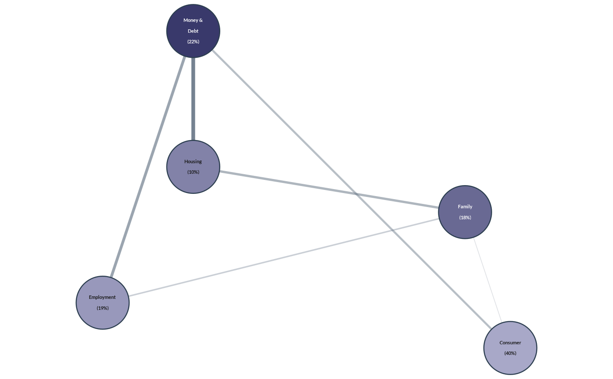

![[Experimental]](figures/lifecycle-experimental.svg)
wjp_network() takes a data frame of nodes (with their coordinates) and a
data frame of weighted edges, and returns a ggplot object with a network
chart following WJP style guidelines: round nodes shaded by their
centrality (or by a value), edges whose width and opacity grow with their
weight, and the name and value of each node printed inside it.
Usage
wjp_network(
nodes,
edges,
x = "x",
y = "y",
labels = "label",
value_labels = NULL,
weight = "weight",
node_radius = NULL,
fill = c("centrality", "value"),
colors = c("#A8A8C8", "#39396B"),
edge_color = "#5D6D7E",
edge_width = c(0.6, 3.2),
edge_alpha = c(0.2, 0.85),
ids = NULL,
from = "from",
to = "to",
node_value = NULL,
edge_gamma = 0.8,
border_color = "#2C3E50",
border_width = 0.9,
label_size = 8,
label_fontface = "bold",
label_colour = "auto",
label_lineheight = 1.15,
label_wrap = NULL,
padding = NULL,
ptheme = WJP_theme()
)Arguments
- nodes
Data frame with one row per node.
- edges
Data frame with one row per edge.
- x, y
Strings. Columns of
nodeswith the coordinates of the nodes. Default is"x"and"y".- labels
String. Column of
nodeswith the names drawn in the nodes. Default is"label".- value_labels
String. Column of
nodeswith a second line of text (e.g.,"(40%)"). Default isNULL.- weight
String. Column of
edgeswith the weight of each edge. Default is"weight".- node_radius
Numeric. Radius of the nodes, in units of the layout. Default is
NULL(6.5% of the largest side of the layout).- fill
String.
"centrality"(default) or"value". See Details.- colors
Character vector of length 2 with the fill of the least and the most central (or valued) nodes. Default is
c("#A8A8C8", "#39396B").- edge_color
String. Color of the edges. Default is
"#5D6D7E".- edge_width
Width of the edges, in points: a range
c(min, max), a single value, or a function of the weights. Default isc(0.6, 3.2).- edge_alpha
Opacity of the edges: a range
c(min, max), a single value, or a function of the weights. Default isc(0.2, 0.85).- ids
String. Column of
nodeswith the node identifiers used inedges. Default isNULL(labels).- from, to
Strings. Columns of
edgeswith the identifiers of the two nodes of each edge. Default is"from"and"to".- node_value
String. Column of
nodesused byfill = "value". Default isNULL.- edge_gamma
Numeric. Exponent applied to the rescaled weights for the edge widths. Default is
0.8.- border_color
String. Color of the node outlines. Default is
"#2C3E50";NAremoves them.- border_width
Numeric. Width of the node outlines, in points. Default is
0.9.- label_size
Numeric. Size of the node text, in points. Default is
8.- label_fontface
String. Font face of the node text. Default is
"bold". Weight faces such as"semibold"are accepted (seewjp_fonts()).- label_colour
String. Color of the node text, or
"auto"(default) for white text on dark nodes and dark text on light nodes.- label_lineheight
Numeric. Distance between the lines of the node text, in ems. Default is
1.15.- label_wrap
Numeric. Maximum number of characters per line of the node names. Default is
NULL(no wrapping).- padding
Numeric. Space around the nodes, in units of the layout. Default is
NULL(1.17 timesnode_radius).- ptheme
ggplot theme to apply. Default is
WJP_theme().
Details
The node layout is taken as given (x, y): compute it beforehand with
any graph layout algorithm. The chart keeps the aspect ratio of the layout
(one unit of x equals one unit of y) and spans the box of the nodes
plus padding, so a figure saved with the same aspect ratio has no empty
margins.
Node fill. With fill = "centrality", each node is shaded by the
sum of the weights of its edges (its strength), rescaled to 0-1 and mixed
between the two colors in RGB space. With fill = "value", the column
node_value is used instead. The text of each node is white on dark fills
and dark on light fills (label_colour = "auto").
Edges. The weight of each edge is rescaled to 0-1 (t). Its width
is edge_width[1] + (edge_width[2] - edge_width[1]) * t^edge_gamma points
and its opacity edge_alpha[1] + (edge_alpha[2] - edge_alpha[1]) * t. Both
edge_width and edge_alpha also accept a single value or a function of
the raw weights. Edges are drawn from the thinnest to the thickest, below
the nodes.
Node names can contain line breaks ("\n"); use ids when the names drawn
differ from the identifiers used in edges.
Examples
# Always load the WJP fonts
wjp_fonts()
# Co-occurrence of problems (fictional data)
nodes <- data.frame(
problem = c("Consumer", "Housing", "Family", "Money & Debt", "Employment"),
share = c("(40%)", "(10%)", "(18%)", "(22%)", "(19%)"),
x = c(1.0, 0.3, 0.9, 0.3, 0.1),
y = c(0.2, 0.6, 0.5, 0.9, 0.3)
)
nodes$name <- c("Consumer", "Housing", "Family", "Money &\nDebt", "Employment")
edges <- data.frame(
from = c("Consumer", "Consumer", "Housing", "Family", "Money & Debt", "Housing"),
to = c("Family", "Money & Debt", "Money & Debt", "Employment", "Employment", "Family"),
lift = c(1.7, 2.1, 2.8, 1.9, 2.4, 2.2)
)
wjp_network(
nodes, edges,
labels = "name",
ids = "problem",
value_labels = "share",
weight = "lift"
)
